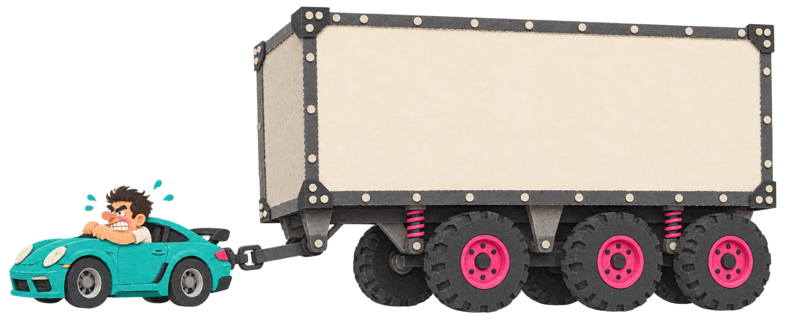

<section id="meme-trailer" style="background:#000">
<h2 class="t nok">ЛИНЕЙНО. ПРОСТО ОЧЕНЬ ТЯЖЕЛО</h2>

<p class="meme-label sort" style="left:237px;top:560px;width:360px;font-size:80px">O(n)</p>
<p class="abs ink" style="left:865px;top:440px;width:770px;font-size:100px;font-weight:800;line-height:1.1;text-align:center">Константа</p>
<aside>Линейно — это про рост, а не про вес прицепа. [пауза 2 с]<br>Чтобы разобраться с этим весом, сначала договоримся, что именно измеряет секундомер.<br>[→ следующий слайд]<br><br>──────────<br>Источники и условия<br>Бумажная иллюстрация ImageGen, V7, прозрачный фон; assets/src/img/memes_v7_early_prompts.txt. Мем №33: цена действий в измеренной реализации. Это метафора после result, не новая модель задержек и не утверждение, что все хеш-таблицы медленнее сортировки.<br></aside>
</section>
